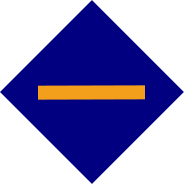

ティッカー: STR8 | プールＩＤ: 000006d97fd0415d2dafdbb8b782717a3d3ff32f865792b8df7ddd00 | ダイナミックな競争力のある料金 | Pooltool.io プロフィール
"振り返るべき唯一の時間は、あなたがどこまで来たかを見るだけです。"
「Cardano ストレートADAステークプール」は、ITプロフェッショナルが維持する分散インフラストラクチャで競争力のある24時間365日プールを運営することで、カルダノネットワークを確保することを目指しています。低い手数料はプールの長寿および持続性を保障する。他の目的がないため、プールの名前は真っ直ぐです。
STR8プールは、すでに私たちに委任しているか、そうすることを計画している人を高く評価しています。カルダノの早期採用者にふさわしい報酬を得るために全力を尽くします! あなたのステークを委任することはリスクフリーであり、報酬を得るために今日STR8に委任することを検討してください。私の名前はクリスです。 私はドイツのIT専門家で、コンピューターサイエンスの経験があり、長年ITビジネスに携わっています。 私はカルダノ愛好家であり、カルダノアンバサダーでもあります。
サーバーの実行と保守は私の趣味に過ぎませんが、私は複数のコミュニティと一緒にこのように取り組んでいます。私はLinuxベースのサーバを維持する上で長年の経験を持っています。プールを運営することは、深刻な挑戦よりも私にとって楽しいです。
あなたはこのプールについての質問や懸念がある場合は、すべての関連カルダノチャンネルで@ChrisSTR8名前の下で電報で私を見つけることができます。
技術人として、私は2017年に チャールズのホワイトボードビデオを通じてカルダノに引き寄せられそれ以来、AMAなどを毎日見て、プロトコルに従ってきました。
カルダノの強いビジョンと組織的なプロセスのために多くの可能性を見ているので、ネットワークの成長と強さを促進するコミュニティのために信頼できるステークプールを運営するサービスを提供できてとても嬉しいです。
STR8プールは、3台の信頼性の高い冗長化された仮想プライベート・サーバー、1台のブロック・プロデューサー、2台のリレーを、ヨーロッパ／ドイツとアジア／シンガポールの異なるデータセンターに分散して運用しています。すべてのデータセンターは、再生可能エネルギーを使用した環境に優しい施設です。このような冗長構成により、STR8プールはメンテナンス時にもブロックを欠かすことはありません。
すべてのノードは、十分なハードウェアリソースと強力なピアリングを備えた最新のセキュアなサーバーOS上で実行され、需要の高まりに対応するための簡単なスケーリングオプションを備えています。
私は私のプールの精巧なリアルタイム監視データであなたを退屈したくない、あなたはプールがあなたのために24時間365日働くことを期待することができます。
私はカルダノの将来を信じて、その一部になりたいので、私はこのプールを実行しています。このため、このプールを無期限に実行する予定です。私はプールができる限り最高のパフォーマンスを発揮し続けるために最善を尽くします。
私は Cardano Shelley Testnet＆StakePool Best Practice Workgroup Telegram group で積極的に活動し、コミュニティの成長を助け、このプールのすべてのベストプラクティスを実装し、途中で新しいベストプラクティスを開発します。
私の希望は、私のプールがあなたのために委任者として非常に魅力的であるということです。 私はこのプールを無理なく、低料金で実行することを約束します。私はITプロフェッショナルなので、常にすべてのベストプラクティスを実施しています。
効果的なプールの利益率は0％から4％の間で動的に設定されており、最低でも報酬の96％を維持することができます。報酬の話であって、賭け金の話ではありませんのでご注意ください。
持続不可能な料金体系で始まる他のプールが最終的に行うように、変動料金を突然4％を超えて引き上げることはしません。代議員として、私はあなたに私のプールに委任する安心を与えたいと思います。
プールが成功し、生き残るためには、委任が必要です。プールランキングサイトを参考にしている人も多いと思いますが、それは理解できます。誓約が報酬やランキングに影響しない限り、プールのランキングに関係する主なパラメータは変動費です。私は、ADAの評価を含む市場の状況を注意深くモニターし、常に競争力と持続可能性を維持するためにプールの可変料金をダイナミックに設定しています。
そう、STR8は変動費0%でも持続的に運用できるのです なぜですか？私はゲームに参加し、自分のADAを自分のプールに委任し、あなたのように委任報酬を得ています。私はパートナーを組む必要がないので、私のオペレーター報酬を他のパーティーと共有する必要もありません。
Cardanoのプロトコルでは、私たち運営者はエポックごとに340ADA以上の固定手数料を設定することになっています。私は、固定料金と変動料金を合わせた効果を「実効」料金と呼んでいます。 340 ADAの固定料金は、生成されたブロックの数を考慮しないと正しくありません。 私の理由は、私の高く評価されている代議員であるあなたとの連帯です。利益率のみに依存することで、リスクを共有します。私はカルダノを信じています。 STR8プールは、変動料金のみに依存することにより、代表者と良い日と悪い日を共有します。
STR8プールは、340ADAの固定費が義務づけられている限り、長期的には最大3.00%の変動費を使用する。将来、固定費の義務化が解除された場合、STR8プールは固定費を0ADAに減らし、変動費を長期的に最大4.00%まで引き上げる予定です。
プールのランキングや市場の仕組みにより、エポックごとにさらにダイナミックに手数料を更新することがあります。変動手数料を最大6.00%(現在の最低固定手数料を含む)または8.00%(最低固定手数料なし)まで引き上げ、これをエポック毎に0.00%ずつ交互に変更することで、年間最大4.00%の効果的な手数料を得ることができます。この交互変更を最も効率的に行う方法は、エポックの境界で、境界の直前で料金を上げ、境界の直後で料金を下げることです。Cardanoでは、プールの手数料の変更は、ステークの変更（2）よりも1エポック（3）長くかかって有効になります。
以下の表は、総ステイクに基づく報酬効果を透過的に示しています。報酬はすべてエポック別です。
| 備考 | ADA 賭け金 [₳] | 変動費 [%] | 固定料金 [₳] | 効果的な料金 [%] | 効果的なコスト [%] | 代議士 褒賞 [₳]*) |
|---|---|---|---|---|---|---|
| 飽和に近い k = 1000 | 32,000,000 | 0.00% | 340 | 1.49% | 0.08% | 70 |
| 32,000,000 | 0.50% | 340 | 1.99% | 0.10% | 70 | |
| 32,000,000 | 1.00% | 340 | 2.49% | 0.13% | 69 | |
| 32,000,000 | 1.50% | 340 | 2.99% | 0.16% | 69 | |
| 32,000,000 | 2.00% | 340 | 3.49% | 0.18% | 69 | |
| 32,000,000 | 3.00% | 340 | 4.49% | 0.23% | 68 | |
| 飽和に近い k = 500 | 64,000,000 | 0.00% | 340 | 0.75% | 0.04% | 71 |
| 64,000,000 | 0.50% | 340 | 1.25% | 0.06% | 70 | |
| 64,000,000 | 1.00% | 340 | 1.75% | 0.09% | 70 | |
| 64,000,000 | 1.50% | 340 | 2.25% | 0.12% | 70 | |
| 64,000,000 | 2.00% | 340 | 2.75% | 0.14% | 69 | |
| 64,000,000 | 3.00% | 340 | 3.75% | 0.19% | 69 |
(この表の背後にある数式を確認したい場合は、こちらの完全なスプレッドシートを参照してください 。 黄色のセルでは、平均報酬を更新するためにあなた自身のステークを入力することができます。)
STR8のプールは最大でも低い。~4%の実効報酬は、期待総利益率が5.2%の場合、代表者にとっては年間0.2%のコストとなります。暗号は1日に2～10％変動することを覚えておいてください。そのため、STR8は有効報酬が最大値であっても、非常に競争力のある報酬を提供していると思います。
更新がポストされます Twitter とで ストレートプール Telegram グループ. STR8プールを中心に、スマートで役立つデリゲーターのコミュニティが形成されていることを誇りに思います。STR8_Talk Telegram groupでは、暗号に関するあらゆることを話しています。
現在のところ、委任者のためのメーリングリストを設定する予定はありません。このプロトコルでは、最終的にはステークプール運営者からステークプール委任者への公式ウォレットでのメッセージングが何らかの形で行われることになると考えられています。 私たちはすでに十分なメールスパムを持っている、私は虐待を受けやすいさらに別のメーリングリストを収集するために貢献しないことによって、さらなるスパムを最小限に抑えたい。
まっすぐに、まっすぐ前方に、それはちょうど動作します。
このドキュメントの最終更新日は2021年09月08日です